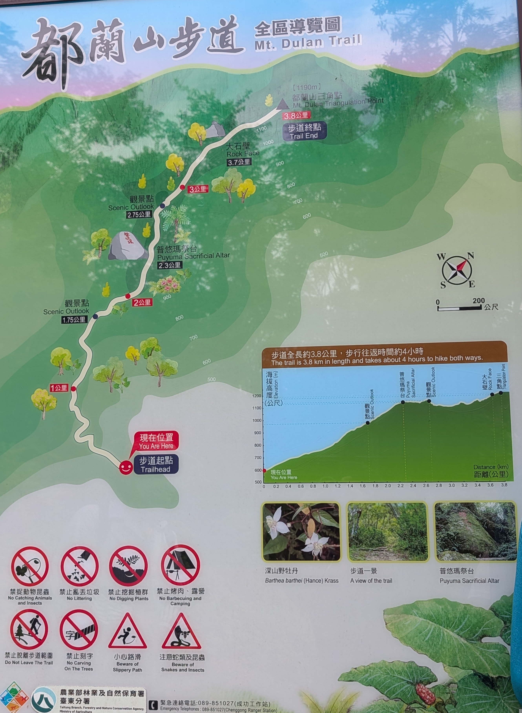
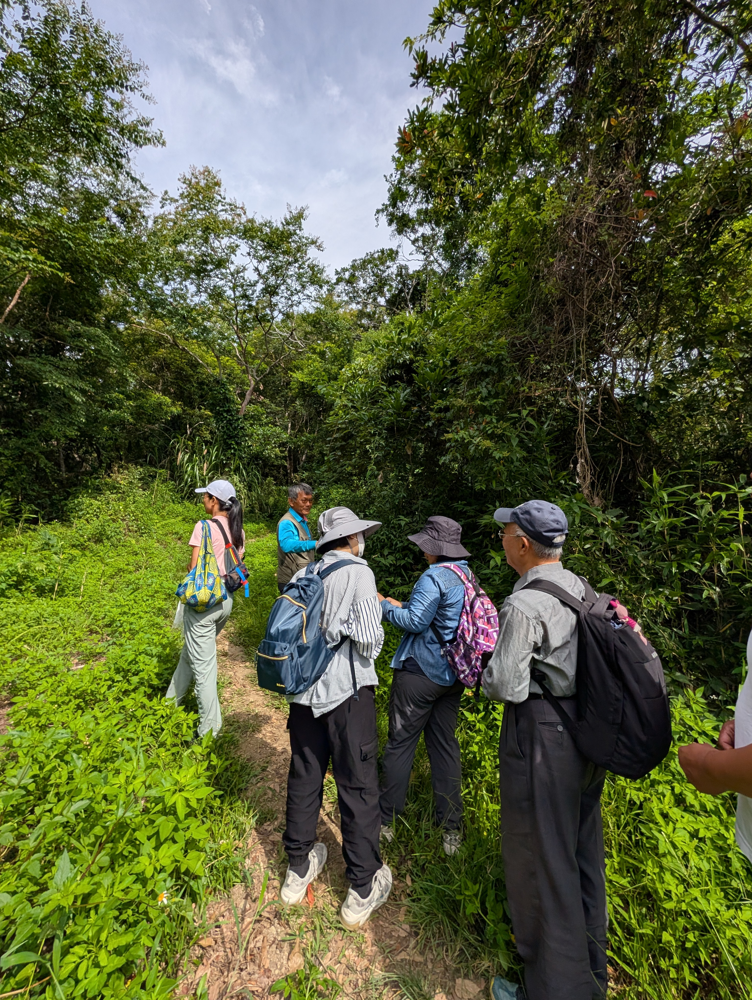
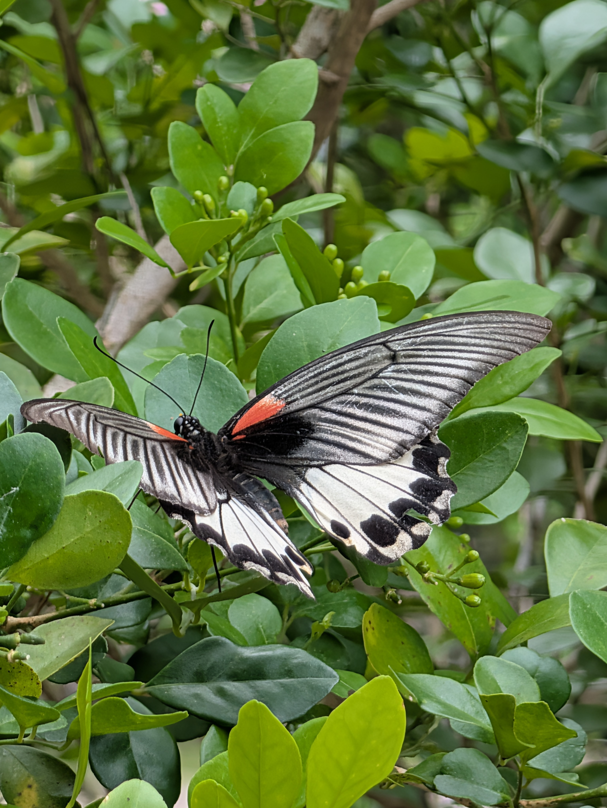

走進海岸山脈聖山 ‧ 傾聽林間微光節奏
每月的第一個週日，讓我們放下都市的喧囂，跟隨荒野保護協會解說志工的腳步，走入都蘭山的亞熱帶雨林與步道。從微小的蕈類、樹梢的烏頭翁與大冠鷲，到隨四季更迭的森林百態，共同記錄大自然的生命奧秘。
請穿著雨鞋或防滑鞋（防螞蝗），本活動無投保，戶外安全請自行負責。
固定於每個月的第一個週日舉行。歡迎將日期加入行事曆，四季都蘭山各有不同風情！
將 2026 定觀日直接加入您的行事曆，不錯過每月的森林之約。
為保護山林環境與解決林道會車空間，一律在台11線集合後併車上山
請提早於 08:20 前抵達福安堂廣場，點名並協調併車車輛。
因路線全程較長，集合與出發時間特別提早 40 分鐘，請大家特別留意！
📍 地點名稱：郡界福安堂（土地公廟前大廣場）
📍 地理位置：台東縣東河鄉都蘭村台11線公路旁（郡界段）
📍 識別標誌：台11線公路旁醒目的福安堂紅色牌樓與寬廣廟埕停車場。

出發前請逐一檢查個人裝備，確保一整天安全舒適的觀察體驗
都蘭山步道終年雲霧繚繞、濕度極高，請務必穿著「雨鞋」或「防滑抓地力強的登山鞋」（切勿穿拖鞋、涼鞋或平底休閒鞋）。步道草叢中偶有吸血螞蝗，建議穿著長褲並將褲管塞入襪子中，或配戴綁腿以策安全。
親近自然 ‧ 尊重生命 ‧ 守護彼此
本活動為荒野志工與愛好者自主推廣之生態共學，主辦方未替參與者辦理保險。請務必評估個人體能狀況，戶外自身安全請自行負責（建議依個人需要自行投保旅平險）。
遵守無痕山林原則：不採摘任何花草、不捕捉野生動物、不遺留任何果皮垃圾。除了足跡什麼都不留下，除了攝影與回憶什麼都不帶走。
如遇中央氣象署發布海上/陸上颱風警報、豪雨特報，或現場天候極端惡劣影響路況安全時，定觀活動將自動取消或調整觀察路線，安全第一。
都蘭山海拔 1,190 公尺，是海岸山脈南段的最高峰，也是卑南族與阿美族共同崇敬的聖山。因緊鄰太平洋，水氣豐沛，終年雲霧繚繞，孕育出極為特殊的暖溫帶與亞熱帶雲霧雨林生態。
步道林相完整，沿途能觀察到巨型著生植物（如山蘇、崖薑蕨）、珍稀蘭科植物、多樣性蕈類，以及台灣藍鵲、烏頭翁、大冠鷲等野生鳥類，是一座不可多得的活生態教室。

